먼저 생각해 보세요.
Das könnte ein Roboter sein. 말하는 사람은 얼마나 확실한가요?
könnte는 '~일 수도 있다'라는 짐작이에요.
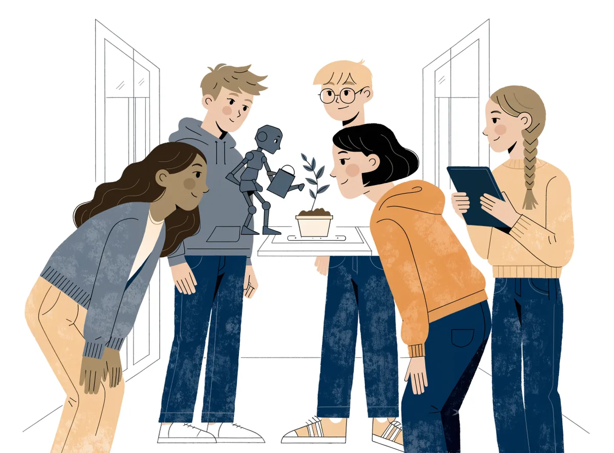
7월 초, 학교에서 발명 전시회가 열려요. Lukas와 Paul은 화분에 물을 주는 로봇을 만들었어요. 친구들은 그 기계가 무엇인지 짐작해 보고, 기술이 우리 삶을 좋게 바꾸는지 토론해요.
눌러서 들어 보세요.
먼저 생각해 보세요.
Das könnte ein Roboter sein. 말하는 사람은 얼마나 확실한가요?
könnte는 '~일 수도 있다'라는 짐작이에요.
Lektion 5의 낱말 다섯 개를 다시 떠올려 보세요.
문법 Vermutungen (könnte, müsste, wird wohl), man, sich lassen, -bar, brauchen … zu
이 과를 마치면 기술의 장점과 위험을 토론하고, 기계가 어떻게 움직이는지 설명하고, 짐작해서 말할 수 있어요.
7월 초, 학교 강당의 발명 전시회예요. 친구들이 Lukas와 Paul의 탁자 앞에 섰어요.
들으면서 찾아보세요. 이 로봇은 무슨 일을 하나요?
전시회가 끝난 뒤, 팟캐스트 팀이 교실에서 기술을 놓고 토론해요.
들으면서 찾아보세요. Frau Schneider는 기계가 무엇을 대신할 수 없다고 하나요?
두 대화를 듣고 답하세요.
Was haben Lukas und Paul erfunden?
Paul hat den Roboter gebaut, und Lukas hat ihn programmiert.
Paul hat ihn programmiert, und Lukas hat ihn gebaut.
Wie oft muss man den Akku aufladen?
Wie viel haben die Teile gekostet?
Was sagt Emma über die Zukunft?
Emma findet künstliche Intelligenz nur gefährlich.
Sie sagt: Beides. Für die Medizin ist sie nützlich.
Frau Schneider는 기계가 무엇을 대신할 수 없다고 하나요?
낱말 33개예요. 낱말이나 예문 앞의 단추를 누르면 소리가 나요. 명사는 der, die, das를 색으로 구분했어요.
die Technik 기술
Lukas interessiert sich für Technik.Lukas는 기술에 관심이 있어요.
die Wissenschaft, die Wissenschaften 과학, 학문
Die Wissenschaft sucht neue Lösungen.과학은 새로운 해결책을 찾아요.
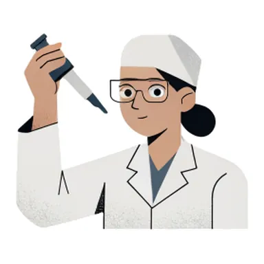
der Forscher, die Forscher 연구자
Die Forscher arbeiten im Labor.연구자들은 실험실에서 일해요.
forschen, hat geforscht 연구하다
Sie forscht seit zehn Jahren.그 사람은 10년째 연구하고 있어요.
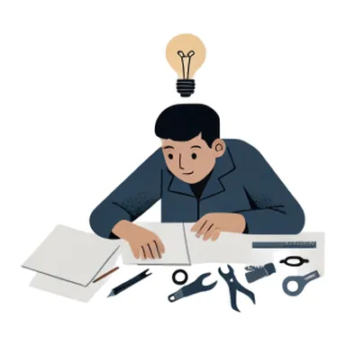
erfinden, hat erfunden 발명하다
Wer hat das Auto erfunden?자동차는 누가 발명했어요?
die Erfindung, die Erfindungen 발명, 발명품
Das Handy ist eine wichtige Erfindung.휴대폰은 중요한 발명품이에요.
entdecken, hat entdeckt 발견하다
Die Forscher haben einen neuen Stern entdeckt.연구자들이 새 별을 발견했어요.
entwickeln, hat entwickelt 개발하다
Paul entwickelt eine App.Paul은 앱을 개발해요.
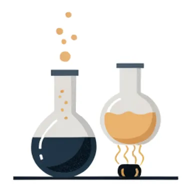
das Experiment, die Experimente 실험
Das Experiment hat funktioniert.실험이 잘됐어요.
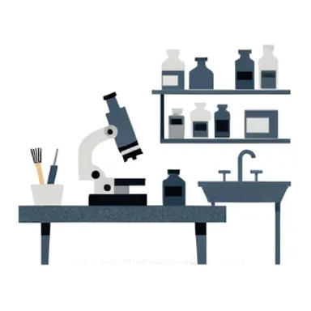
das Labor, die Labore 실험실
Im Labor tragen alle eine Brille.실험실에서는 모두 안경을 써요.
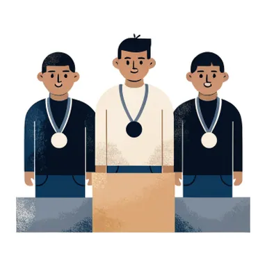
der Wettbewerb, die Wettbewerbe 대회, 경쟁
Wir machen bei einem Wettbewerb mit.우리는 대회에 나가요.
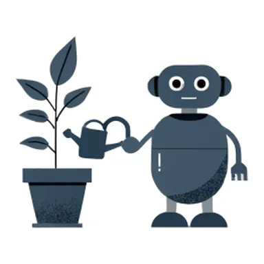
der Roboter, die Roboter 로봇
Der Roboter gibt den Pflanzen Wasser.로봇이 식물에 물을 줘요.
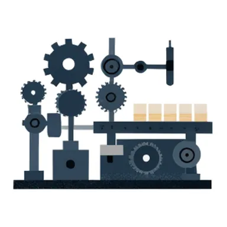
die Maschine, die Maschinen 기계
Die Maschine ist sehr laut.그 기계는 아주 시끄러워요.
das Gerät, die Geräte 기기, 장치
Das Gerät lässt sich leicht bedienen.그 기기는 쉽게 다룰 수 있어요.
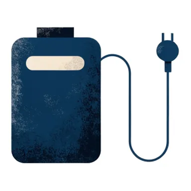
der Akku, die Akkus 충전지
Der Akku ist leer.충전지가 다 됐어요.
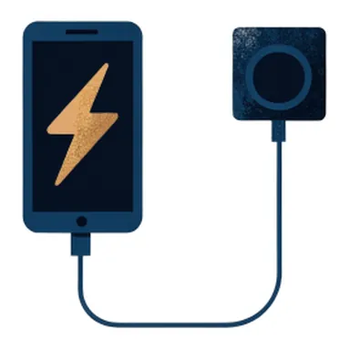
aufladen, hat aufgeladen (du lädst auf, er lädt auf) 충전하다
Ich lade mein Handy auf.나는 휴대폰을 충전해요.
die Daten (Pl.) 데이터, 자료
Die App speichert viele Daten.그 앱은 데이터를 많이 저장해요.
programmieren, hat programmiert 프로그램을 짜다
Paul hat den Roboter programmiert.Paul이 로봇의 프로그램을 짰어요.
speichern, hat gespeichert 저장하다
Hast du den Text gespeichert?글을 저장했어?
digital 디지털의
Unsere Schule hat digitale Tafeln.우리 학교에는 디지털 칠판이 있어요.
automatisch 자동의, 저절로
Das Licht geht automatisch an.불이 저절로 켜져요.
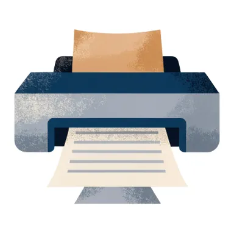
der Drucker, die Drucker 프린터, 인쇄기
Der Drucker ist schon wieder kaputt.프린터가 또 망가졌어요.
der Fortschritt, die Fortschritte 발전, 진보
Die Technik macht schnelle Fortschritte.기술은 빠르게 발전해요.
das Risiko, die Risiken 일어날 수 있는 위험
Jede neue Technik hat auch Risiken.새로운 기술에는 언제나 위험도 있어요.
die Gefahr, die Gefahren 위험
Im Internet gibt es auch Gefahren.인터넷에는 위험도 있어요.
die Sicherheit 안전
Die Sicherheit der Daten ist wichtig.데이터의 안전이 중요해요.
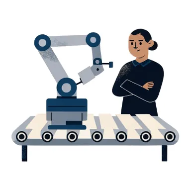
ersetzen, hat ersetzt 대신하다, 바꾸다
Kein Roboter kann einen Freund ersetzen.어떤 로봇도 친구를 대신할 수 없어요.
nützlich 쓸모 있는, 유익한
Diese App ist sehr nützlich.이 앱은 아주 쓸모 있어요.
möglich 가능한
Ist das möglich?그게 가능해요?
unmöglich 불가능한
Ohne Strom ist das unmöglich.전기가 없으면 그건 불가능해요.
bedienen, hat bedient 다루다, 조작하다
Ich kann die Maschine nicht bedienen.나는 그 기계를 다룰 줄 몰라요.
funktionieren, hat funktioniert 작동하다, 잘되다
Der Drucker funktioniert nicht.프린터가 작동하지 않아요.
lösen, hat gelöst 풀다, 해결하다
Wir müssen das Problem lösen.우리는 그 문제를 풀어야 해요.
이 과의 낱말로 여덟 문제를 풀어요.
예문을 보고 답해 보세요.
어느 문장이 가장 확실한 짐작인가요?
규칙
확실히 모르는 일을 짐작해서 말할 때 könnte, müsste, wird wohl을 써요. könnte는 '~일 수도 있다', wird wohl은 '아마 ~일 것이다', müsste는 '틀림없이 ~일 것이다'예요. 동사 원형은 맨 끝에 써요.
| 얼마나 확실한가 | 보기 |
|---|---|
| 그럴 수도 있다 | Das könnte ein Roboter sein. |
| 아마 그렇다 | Das wird wohl ein Roboter sein. |
| 거의 틀림없다 | Das müsste ein Roboter sein. |
주의 vielleicht, wahrscheinlich, bestimmt로도 짐작을 말할 수 있어요. Das ist wahrscheinlich ein Roboter.
예문을 보고 답해 보세요.
Das Problem ist lösbar. 같은 뜻의 문장은 무엇인가요?
규칙
누가 하는지 말하지 않고 '할 수 있다'고 말하는 길이 세 가지 있어요. man kann, sich lassen + 동사 원형, 그리고 동사에 -bar를 붙인 형용사예요. 세 문장은 뜻이 같아요.
| 보기 | |
|---|---|
| man kann | Man kann das Gerät leicht bedienen. |
| sich lassen | Das Gerät lässt sich leicht bedienen. |
| -bar | Das Gerät ist leicht bedienbar. |
주의 -bar 앞에 un-을 붙이면 '할 수 없는'이 돼요. lösbar는 unlösbar, bezahlbar는 unbezahlbar가 돼요.
예문을 보고 답해 보세요.
Du brauchst nicht zu kommen. 같은 뜻의 문장은 무엇인가요?
규칙
brauchen은 nicht, kein, nichts, nur와 함께 zu + 동사 원형을 써요. nicht brauchen zu는 '~할 필요가 없다', nur brauchen zu는 '~하기만 하면 된다'예요. 나누어지는 동사는 zu가 가운데에 들어가요.
| 보기 | |
|---|---|
| nicht … zu | Du brauchst nicht zu warten. |
| nur … zu | Du brauchst nur die App zu öffnen. |
| 나누어지는 동사 | Du brauchst den Akku nicht aufzuladen. |
주의 '~해야 한다'고 할 때는 brauchen이 아니라 müssen을 써요. Ich muss den Akku aufladen.
전시회에서 Emma의 아버지 Thomas가 Lukas의 탁자에 왔어요. 듣고 답하세요.
Am Tisch von Lukas
Thomas Hallo Lukas. Was ist das für ein Gerät? Das könnte eine Uhr sein.
Lukas Fast. Es ist ein Roboter für Pflanzen. Er prüft jede Stunde, ob die Erde trocken ist.
Thomas Und dann?
Lukas Dann gibt er automatisch Wasser. Sie brauchen nichts zu tun.
Thomas Das wäre etwas für mein Restaurant. Lässt sich der Roboter auch für große Pflanzen benutzen?
Lukas Noch nicht. Aber Paul und ich entwickeln einen größeren Roboter. Er müsste im Herbst fertig sein.
Was prüft der Roboter?
Man muss dem Roboter jeden Tag helfen.
Man braucht nichts zu tun.
Wofür möchte Thomas den Roboter benutzen?
더 큰 로봇은 언제쯤 다 될 것 같나요?
듣고 알맞은 것을 고르세요.
Emma는 소포 안에 무엇이 있다고 짐작하나요?
Das Paket ist schwer. Es könnte ein Drucker sein.
Yuna는 무엇이 필요 없다고 하나요?
Du brauchst mich nicht abzuholen. Ich nehme den Bus.
충전지를 충전하는 데 얼마나 걸리나요?
Der Akku lässt sich in einer Stunde aufladen.
이 과제는 어떤가요?
Die Aufgabe ist lösbar. Ihr braucht nur genau zu lesen.
Elif가 학교 신문에 쓴 기사예요. 읽고 답하세요.
Schüler erfinden die Zukunft
Am Freitag zeigten vierzig Schülerinnen und Schüler ihre Erfindungen in der Schule.
Lukas und Paul aus der 9b haben einen Roboter entwickelt, der Pflanzen automatisch Wasser gibt. Er lässt sich mit einer App bedienen und ist bezahlbar: Die Teile kosteten nur dreißig Euro.
Eine Gruppe aus der 10a hat eine Tasche gebaut, mit der sich ein Handy aufladen lässt. Der Strom kommt von der Sonne.
Den ersten Preis bekam ein Mädchen aus der 8c. Ihre App erkennt, ob eine Pflanze krank ist. Man braucht nur ein Foto zu machen.
Nächstes Jahr werden viele Gruppen wohl beim Wettbewerb „Jugend forscht“ mitmachen.
Wie viele Schüler zeigten ihre Erfindungen?
Womit lässt sich der Roboter bedienen?
Die Tasche der 10a lädt das Handy mit Strom von der Sonne auf.
Wer bekam den ersten Preis?
1등을 한 앱은 무엇을 알아내나요?
전시회에 나온 발명품 세 가지예요. 보고 답하세요.
Drei Erfindungen
| Erfindung | Klasse | Teile |
|---|---|---|
| Roboter | 9b | 30 Euro |
| Tasche mit Strom | 10a | 45 Euro |
| App | 8c | 0 Euro |
Welche Erfindung kommt aus der 10a?
Die Teile für die App haben nichts gekostet.
Welche Erfindung war am teuersten?
짐작하는 말이에요. 알맞은 말을 고르세요.
Das ein Roboter sein. Ich bin nicht sicher.
저건 로봇일 수도 있어요. 확실하지는 않아요.
Der Akku ist fast leer. Das Handy gleich ausgehen.
충전지가 거의 다 됐어요. 휴대폰이 곧 꺼질 거예요.
In zwanzig Jahren wohl viele Autos allein fahren.
20년 뒤에는 아마 많은 차가 혼자 달릴 거예요.
Paul ist nicht da. Er wird krank sein.
Paul이 안 왔어요. 아마 아픈가 봐요.
Das müsste die Lösung .
틀림없이 그게 답일 거예요.
Das Paket könnte von Oma .
그 소포는 할머니가 보내신 것일 수도 있어요.
한국어 뜻을 보고 알맞은 말을 고르세요.
Das Gerät sich leicht bedienen.
그 기기는 쉽게 다룰 수 있어요.
Das Problem ist . Man kann es lösen.
그 문제는 풀 수 있어요.
Der Text ist nicht . Er ist zu klein.
그 글은 읽을 수 없어요. 너무 작아요.
Du brauchst nicht .
너는 기다릴 필요가 없어.
Du brauchst nur die App .
앱만 열면 돼.
Den Akku braucht man nicht jeden Tag .
충전지는 날마다 충전할 필요가 없어요.
나누어지는 동사는 zu가 가운데에 들어가요.
알맞은 낱말을 고르세요.
Wer hat das Telefon ?
전화기는 누가 발명했어요?
Der Drucker nicht. Er ist kaputt.
프린터가 작동하지 않아요. 망가졌어요.
Ich muss mein Handy . Der Akku ist leer.
휴대폰을 충전해야 해요. 충전지가 다 됐어요.
Die App alle Daten.
그 앱은 모든 데이터를 저장해요.
Jede neue Technik hat Vorteile und .
새로운 기술에는 언제나 장점과 위험이 있어요.
Kein Roboter kann einen Lehrer .
어떤 로봇도 선생님을 대신할 수 없어요.
낱말을 순서대로 눌러 문장을 만드세요.
저건 로봇일 수도 있어.
그 기기는 쉽게 다룰 수 있어.
너는 아무것도 할 필요가 없어.
Paul이 로봇의 프로그램을 짰어.
낱말과 뜻을 짝지으세요.
듣고 그대로 써 보세요.
Das könnte ein Roboter sein. 저건 로봇일 수도 있어.
Du brauchst nichts zu tun. 너는 아무것도 할 필요가 없어.
Das Problem ist lösbar. 그 문제는 풀 수 있어.
Das könnte ein Roboter sein. 저건 로봇일 수도 있어.
Das wird wohl eine App sein. 아마 앱일 거야.
Das müsste die Lösung sein. 틀림없이 그게 답일 거야.
Ich vermute, dass es funktioniert. 내 짐작에는 잘될 거야.
Das Gerät funktioniert so: … 이 기기는 이렇게 움직여.
Zuerst … Dann … Zum Schluss … 먼저 … 그다음에 … 마지막으로 …
Man braucht nur den Akku aufzuladen. 충전지만 충전하면 돼.
Es lässt sich leicht bedienen. 쉽게 다룰 수 있어.
Die Technik ist nützlich, weil … 기술은 ~해서 쓸모 있어.
Ein Risiko ist, dass … 위험 하나는 ~라는 거야.
Das ist nützlich, aber auch gefährlich. 그건 쓸모 있지만 위험하기도 해.
Das kann keine Maschine ersetzen. 그건 어떤 기계도 대신할 수 없어.
In zwanzig Jahren werden wohl viele Autos allein fahren. 20년 뒤에는 아마 많은 차가 혼자 달릴 거야.
Es wird neue Berufe geben. 새 직업이 생길 거야.
Das ist bald möglich. 그건 곧 가능해져.
대화 A에서 역할을 하나 고르세요. 상대의 말은 음성으로 나오고, 내 차례에는 직접 말해요.
있으면 좋겠다고 생각하는 발명품을 떠올리며 적으세요. 완성된 문장을 소리 내어 읽어 보세요.
Ich würde gern einen Roboter für mein Zimmer erfinden.
Meine Erfindung räumt jeden Tag mein Zimmer auf.
Sie lässt sich mit einer App bedienen.
Dann brauche ich nicht mehr mein Zimmer aufzuräumen.
Chance oder Risiko?
휴대폰, 로봇, 인공지능 가운데 하나를 골라 장점과 위험을 견주는 글을 써요. 여덟 문장쯤 써요.
Künstliche Intelligenz verändert unser Leben. Mit ihr lassen sich lange Texte in einer Minute schreiben. Das ist sehr nützlich, zum Beispiel beim Lernen. Man braucht aber nicht alles zu glauben, was sie schreibt, denn sie macht auch Fehler. Ein Risiko ist, dass viele Menschen ihre Arbeit verlieren könnten. Außerdem sind unsere Daten nicht immer sicher. In zwanzig Jahren wird man wohl in fast jedem Beruf mit künstlicher Intelligenz arbeiten. Meiner Meinung nach ist sie nützlich, aber sie kann den Menschen nicht ersetzen.
다 쓴 뒤에 확인해 보세요.
Ich kann Vorteile und Risiken der Technik diskutieren.기술의 장점과 위험을 토론할 수 있어요.
Ich kann erklären, wie ein Gerät funktioniert.기기가 어떻게 움직이는지 설명할 수 있어요.
Ich kann sagen, was etwas sein könnte und was wohl passieren wird.무엇일지, 아마 무슨 일이 일어날지 짐작해서 말할 수 있어요.